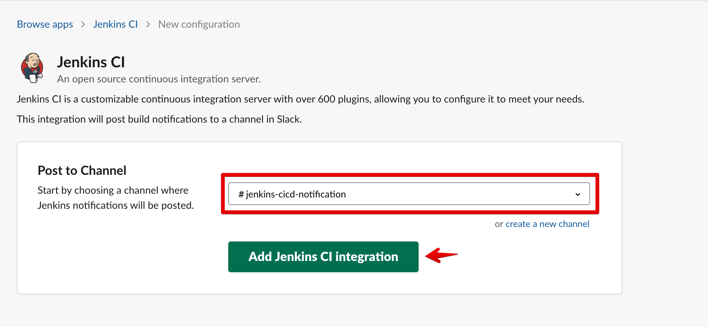

How to integrate Jenkins with Slack
1. Slack 설정
1-1) Jenkins APP 추가
-
Apps > JenkinsCI > Add 클릭

-
Add to Slack 버튼 클릭

-
slack 연동 채널 입력 후 Add 버튼 클릭 
-
생성 완료
설치 과정이 마무리되면 Slack과 Jenkins의 연동 가이드가 나오며, 가이드 절차에 따라 설정해주면 됩니다.
특히, Step 3의 Base URL과 Integration Token은 Jenkins 설정에 필요한 값으로 따로 기록해 두는 것이 좋습니다.
단, 연동 가이드의 jenkins plugin 버전이 다른 경우 Jenkins 설정은 해당 가이드 문서를 따라 진행해주세요.
2. Jenkins 설정
2-1) Jenkins plugin 추가
- Slack Notification 검색 후 설치
2-2) slack credential 생성
- Add Credentials 클릭
- 설정값
Kind : Secret Key
secret : 슬랙에서 생성한 토큰값 입력
id : 화면에 보이는 id 값
2-3) Jenkins 시스템 설정 등록
Jenkins 설정 등록을 하여 Jenkins 와 Slack을 연동한다.
-
Jenkins 관리 > 시스템 설정

-
Jenkins Slack 설정 및 테스트
workspace : slack 결과에 나온 Team Subdomain 입력
Credential : 위에 생성한 Slack credential
member id : slack channel id
Test Connection : 접속 테스트 버튼 -> 정상인 경우 좌측에 'Success' 출력
2-4) Jenkins project 설정
Jenkins project 에 따라서 Slack 연결을 별도로 연결하여 사용가능하다.
2-4-1) 일반 설정
- Jenkins project > 구성 > Slack Notifications 선택

- Slack Notifications 필요한 내용 선택

2-4-2) pipeline or blue ocean 인 경우
JenkinsFile 을 이용하여 작업한다.
- 공통 함수 생성
def resultSlackSend(bar_color, result) {
slackSend color: bar_color, message:"${env.JOB_NAME} - #${env.BUILD_NUMBER} : ${result} after ${currentBuild.durationString.split(" and")[0]} (<${env.BUILD_URL}|Open>)"
}
- 작업 시작 하는 경우
pipeline step 안에서 호출
resultSlackSend("good", "START")
- 작업 종료한 경우
pipeline steps 밖에서 호출
post {
success {
// 빌드의 결과가 성공일경우
resultSlackSend("good", "SUCCESS")
}
failure {
// 빌드의 결과가 실패일경우
resultSlackSend("danger", "FAILURE")
}
aborted {
// 빌드를 중간에 멈추는 경우
resultSlackSend("warning", "ABORTED")
}
}
- 결과